Commit often, perfect later, publish once
Hello, git
A completely ignorant, childish person with no manners.
$ /dont-panic/
note to self, use the bloody command line. It works!
— Channing Walton (@channingwalton) January 20, 2012
$ git <verb>
$ git help <verb> $ git <verb> --help
$ git init Initialized empty Git repository in /scratch/.git/ $ echo hello, world > hello.txt $ git add hello.txt $ git commit -m 'my first commit!' [master (root-commit) deadbee] my first commit! 1 file changed, 1 insertion(+) create mode 100644 hello.txt
$ git log --patch commit deadbeef16165bb95a541321a7acf9cef9731c1d Author: Alexander Groß <agross@therightstuff.de> Date: Sat Feb 6 12:41:24 2010 +0100 my first commit! diff --git a/hello.txt b/hello.txt new file mode 100644 index 0000000..4b5fa63 --- /dev/null +++ b/hello.txt @@ -0,0 +1 @@ +hello, world
Content Lifecycle
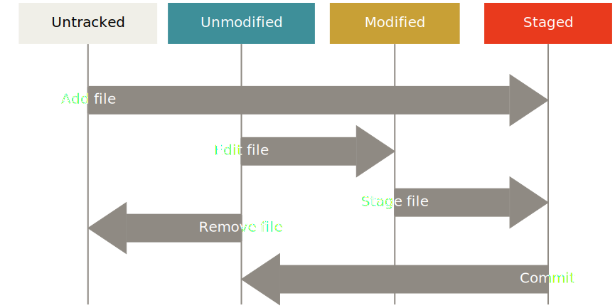Staging Area = Power
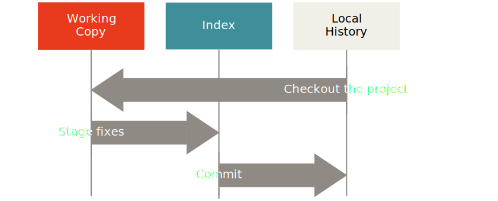It allows you to do partial operations withgit {add|checkout|reset HEAD} --patch
Branching
Simple history
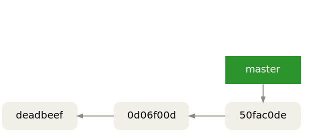The HEAD pointer
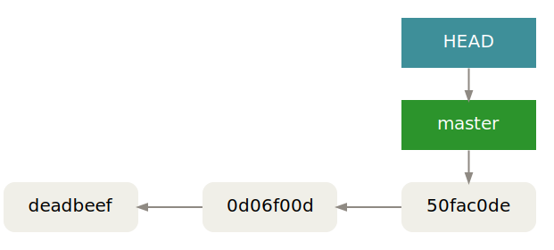
Creating a branch
$ git branch topic [<where>]
(<where> defaults to HEAD)

Current branch = where HEAD is
$ git checkout topic

A Shortcut
$ git checkout -b <name> <where> == $ git branch <name> <where> && git checkout <name>
Advancing the topic branch
$ git commit -am "work on topic"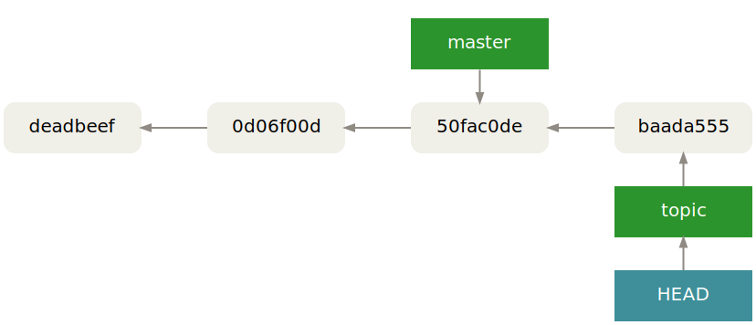
Back to master
$ git checkout master

Advancing the master branch
$ git commit -am "work on master"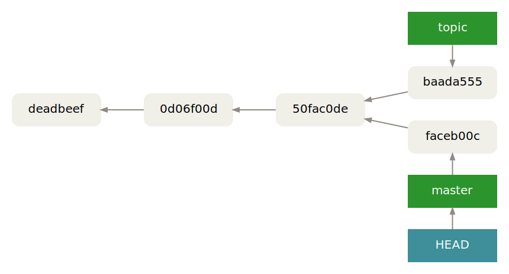
Integration
Your options:
Visualizing a "Git Merge" pic.twitter.com/RQJ2AV7JRQ
— David Rousset (@davrous) August 20, 2016
Diverged History
Recursive Merge
$ git checkout master
$ git merge topic
Recursive merge: Integrates two diverged branches.
Undoing The Merge
$ git reset --hard E # Like a pro (covers recursive and ff merges): $ git reset --hard @@{1}
Linear History

Fast-Forward Merge
$ git checkout master
$ git merge topic
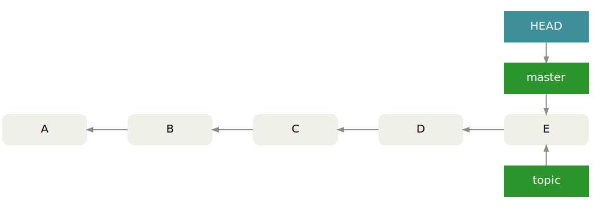
Fast-forward merge: The master pointer can be moved from C to E without losing commits reachable from master.
Controlling git merge behavior
$ git merge --ff-only
Enforces a fast-forward merge, aborts if history is diverged.
$ git merge --no-ff
Enforces a recursive merge, even if a fast-forward merge would be possible.
Controlling git merge recursive strategy
$ git merge --strategy-option ours
Prefer our changes when encountering conflicts.
$ git merge -X theirs
Prefer their changes when encountering conflicts.
Even more options
-
git cherry-pick <SHA>
Pick a single commit from another branch on top ofHEAD. -
git merge --squash topic
Apply commits from thetopicbranch combined as a single commit on top ofHEAD. -
git merge feature/login bugfix/42 experiment/foo
Integrate any number of non-conflicting branches with a single merge commit. -
git merge --strategy=ours obsolete
Integrate history, but ignore (undo) all changes introduced by the obsolete branch.
I'll tell my story after I heard yours
$ git checkout topic
$ git rebase master
Commit C and D is applied on top of master as C' and D'.
$ git rebase origin/master pic.twitter.com/pAHtrPrm84
—
Alejandro AR (@kinduff)
January 16, 2015
git rebase -i ;) pic.twitter.com/Qy2k7Q0EQJ
—
nixCraft (@nixcraft)
May 7, 2017
This is from a project I am working on. #git
#rebase vs. #merge
pic.twitter.com/TRgsq7BSin
—
MiCHΛΞl (@michaelhenke)
April 6, 2015
Complex Rebase
How to get rid of C when rebasing client on master?

Complex Rebase
…is easy when you know the syntax
$ git rebase --onto master server client
A Second Variant
$ git rebase --onto B server client

Branching Strategies
Branches Provide Isolation
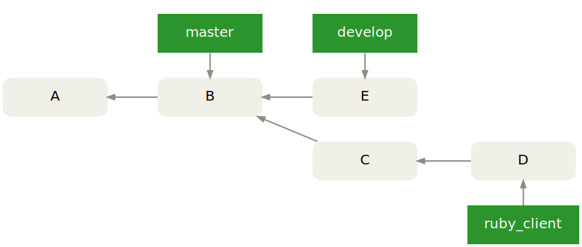git mergeif you want to keep information about integrated branchesgit rebaseif you do not care
git-flow

HubFlow

Gerrit

Workflows
Our 'Always amend commit and force push' model increased communication quality in our team a lot.
#GoldenCommit
@R0MMSEN
—
Marco Heimeshoff (@Heimeshoff)
July 13, 2017
Centralized
Integration Manager

Benevolent Dictator
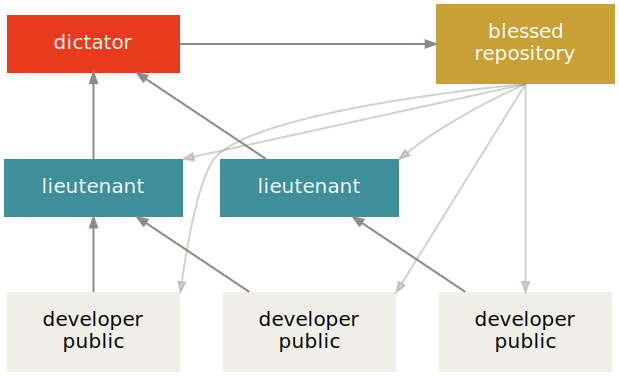Git Internals
Commit = Trees + Blobs

History = Linked Commits
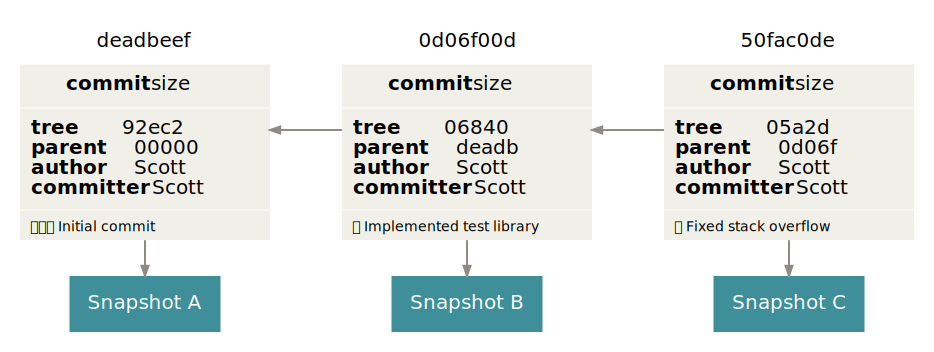Pointers Everywhere
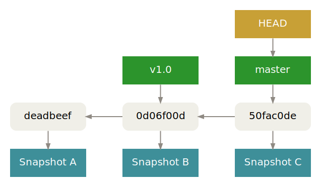Pointers Everywhere
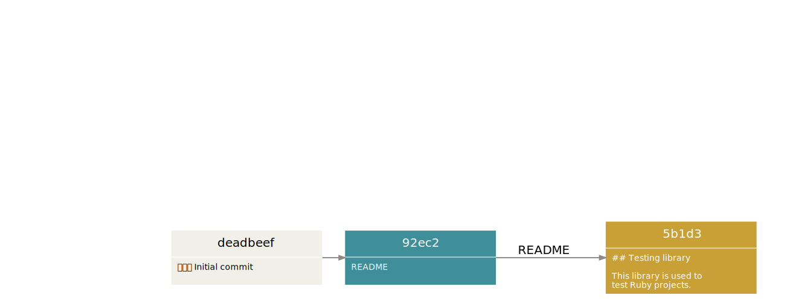Pointers Everywhere

Pointers Everywhere

Delta Storage
Snapshot Storage
Advanced Topics
Throw-Away Integration Branches
- Use temporary
pubranches - Do not base any work off of
pu - Enable “Reuse recorded resolution”
git config --global rerere.enabled true git config --global rerere.autoUpdate true
# All branches were tested in isolation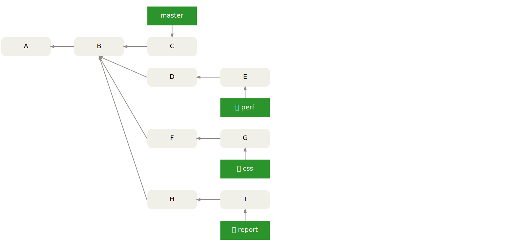
$ git checkout -b pu master

$ for b in perf css report; do git merge $b; done
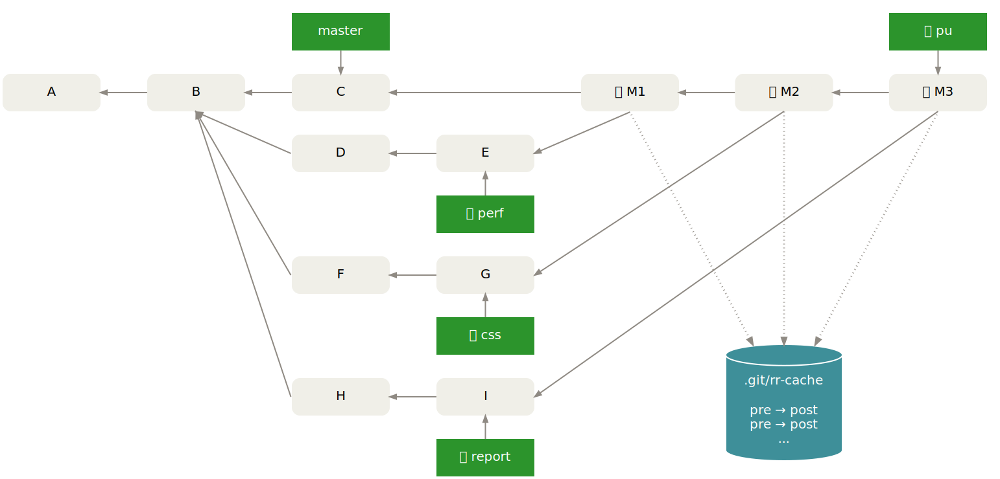
$ git reset --hard master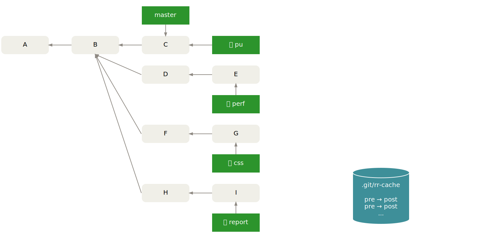
$ for b in css report; do git merge $b; done

$ git checkout master; git merge pu; git branch -d pu

Bisecting
- Attempts to find bug-introducing commits by testing a minimum set of revisions
- Enters detached
HEADstate while searching - After the bad commit has been found, undo it
git revert [--no-commit] <bad-commit>
- Automate testing
git bisect run <some-script>
some-scriptcan do things likecherry-picking reproductions, demo available
v1.0 works but v1.1 contains a regression
$ git stash save "whatever you're doing"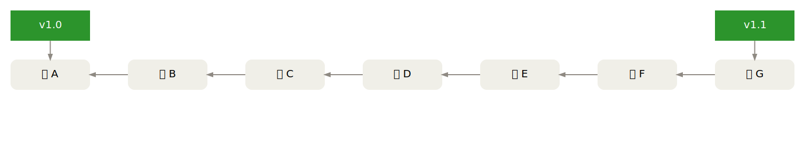
Start looking for the bug
$ git bisect start v1.1 v1.0
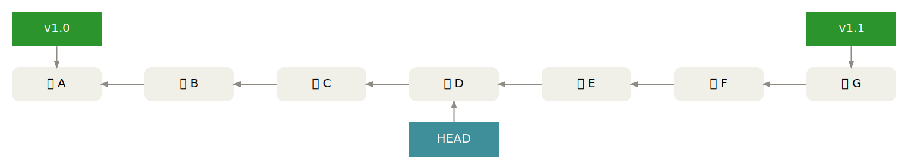
Test commit D
$ make test # => error
Give feedback about D
$ git bisect bad
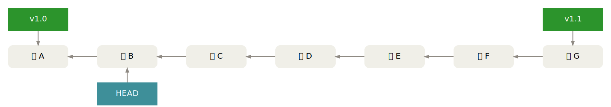
Test commit B
$ make test # => success
Give feedback about B
$ git bisect good

Test commit C
$ make test # => success
Give feedback about C
$ git bisect good
Culprit found!
# D is the first bad revision
Exit search
$ git bisect reset
Variant: bisect with cherry-pick
$ git checkout -b repro v1.1 && git commit -m 'repro'
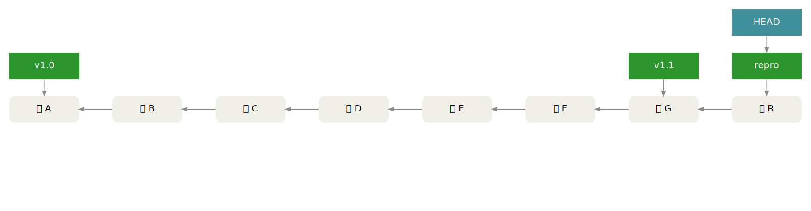
Start looking for the bug
$ git bisect start v1.1 v1.0

Apply repro commit
$ git cherry-pick repro
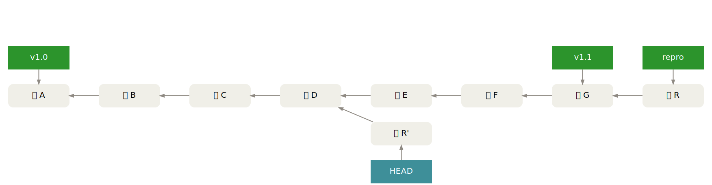
Test commit D + R'
$ make test # => error
Undo R'
$ git reset --hard HEAD~
Give feedback about D
$ git bisect bad
Repeat!
$ git cherry-pick repro
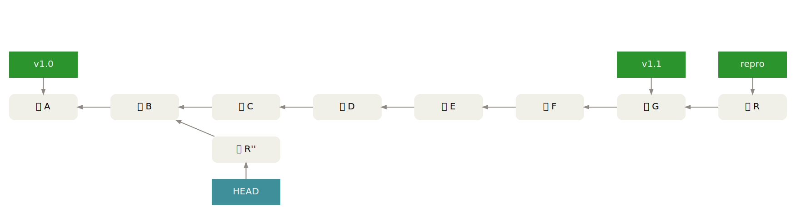
Documentation
Written by Experts

git-rebase - Forward-port local commits to the updated upstream head

Image Credits
- Git Logo by Jason Long is licensed under the Creative Commons Attribution 3.0 Unported License
-
 Git Comic
by
xkcd
is licensed under the
Creative Commons Attribution-NonCommercial 2.5 Generic License
Git Comic
by
xkcd
is licensed under the
Creative Commons Attribution-NonCommercial 2.5 Generic License
- SVN Search Volume by GitPrime
- Network Cable by Sascha on flickr is licensed under the Creative Commons Attribution-NoDerivs 2.0 Generic License
-
git-flow
by
Vincent Driessen
-
hubflow
by
DataSift
-
Gerrit Workflow
by
CollabNet, Inc.
-
Le Petit Robert
by
Éditions Le Robert
-
Pro Git
by
Apress